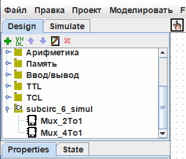

Библиотеки Logisim
Каждый проект Logisim-evolution автоматически представляет собой библиотеку, которая может быть загружена в другие проекты. Для этого в целевом проекте выберите пункт меню | Проект |→| Загрузить библиотеку |→| Библиотека Logisim... | и укажите файл проекта. Все схемы, созданные в первом проекте, станут доступны в качестве подсхем во втором. Это позволяет повторно использовать разработанные компоненты в разных проектах и делиться ими.
Ниже показан пример проекта, загруженного в качестве библиотеки (он отображается в Навигаторе).

Примечание: Загружаемая библиотека не должна содержать схем с именами, совпадающими с уже существующими схемами в текущем проекте.
Каждый проект имеет назначенную «главную схему». Сделать текущую схему главной можно через контекстное меню в Навигаторе с помощью пункта | Сделать главной схемой |. Единственное назначение этого параметра — определять, какая схема будет открываться первой при запуске файла проекта. Имя схемы по умолчанию ("main") не имеет критического значения, вы можете переименовать или удалить её при необходимости.
В загруженной библиотеке Logisim-evolution вы можете просматривать схемы и анализировать их состояние, но программа не позволит редактировать их чертежи или другие данные в файле библиотеки.
Если вы хотите изменить схему в загруженной библиотеке, откройте этот файл в Logisim-evolution отдельно. После сохранения изменений другие проекты автоматически загрузят обновлённую версию. Если автообновление не произошло, вы можете щёлкнуть правой кнопкой мыши по названию библиотеки в Навигаторе и выбрать пункт | Перезагрузить библиотеку |.
Далее: Динамические компоненты.